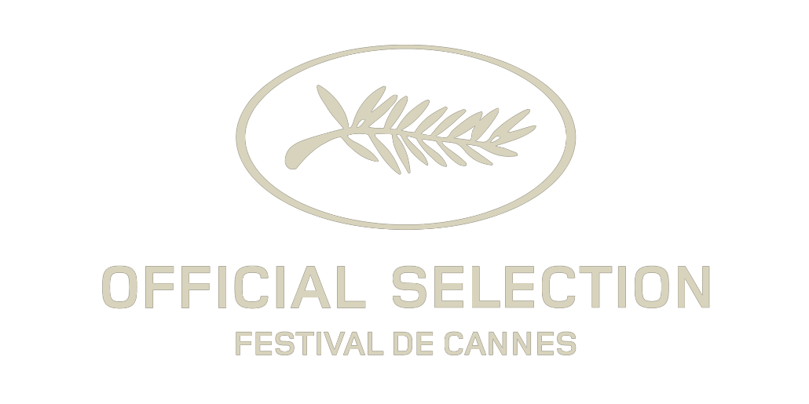

The Lobster
Colin Farrell
Léa Seydoux
Rachel Weisz
Michael Smiley
Jessica Barden
Ben Whishaw
Olivia Colman
Ashley Jensen
Ariane Labed
Angeliki Papoulia
John C. Reilly
director of photography Thimios Bakatakis edited by
Yorgos Mavropsaridis casting director
Jina JAy line producer Cáit collins sound
designer Johnnie Burn production designer
Jacqueline Abrahams costume designer
Sarah Blenkinsop hair designer
Elieen Buggy make-up designer
Sharon Doyle co-producers
Christos V. Konstantakopoulos Leonitine Petit Carole Scotta Joost De
Vires
and Derk-Jan Warrink executive producers
Andrew Lowe Tessa Ross and
Sam Lavender produced by
Ed Guiney Lee Magiday Ceci Dempsey and
Yorgos Lanthimos written by
Yorgos Lanthimos and
Efthimis Filippou directed by Yorgos Lanthimos
